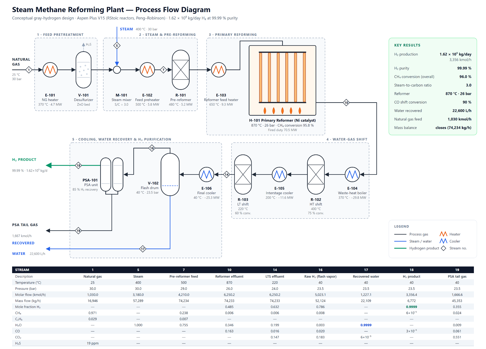
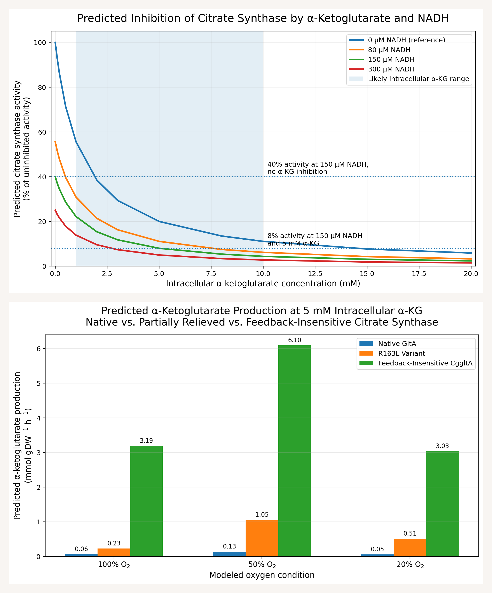

Process design and computational modeling
Engineering Projects
These projects let me work with a different kind of evidence: models that are useful when their assumptions and limits are clear.
Steam methane reforming in Aspen Plus
September–December 2025 · Process simulation
I built an Aspen Plus flowsheet using RStoic reactors, flash drums, mixers, and separators to model steam methane reforming and water-gas-shift conversion. The five-unit design modeled approximately 1.63 × 10⁵ kg/day of hydrogen at 99.99% purity, using reaction conditions in the 850–900°C range.
Those values describe the simulated design, not an operating plant. The project helped me connect individual equipment models to the overall process. A unit can appear to work on its own, but its outlet becomes the next unit’s inlet, so I have to think about the system as a whole. I want to keep developing that judgment as I learn more about transport, control, and process design.
| Item | Model description |
|---|---|
| Software | Aspen Plus |
| Reaction models | Steam methane reforming and water-gas-shift conversion |
| Equipment models | RStoic reactors, flash drums, mixers, separators |
| Reported design output | Approximately 1.63 × 10⁵ kg/day H₂ at 99.99% purity |
I recreated the Aspen Plus model to make the process easier to show here. The figures below show that reconstruction; the project summary above describes my original design.


UH iGEM metabolic modeling
June–August 2026 · Python and COBRApy
I used Python and COBRApy to compare native GltA, the R163L citrate synthase variant, and feedback-insensitive CggltA across 108 modeled conditions. The model predicted 74% higher average α-ketoglutarate production with R163L than with native GltA.
...
...
| Item | Scope or result |
|---|---|
| Variants | Native GltA, R163L, and CggltA |
| Conditions evaluated | 108 modeled conditions |
| Reported prediction | R163L: 74% higher average α-ketoglutarate production than native GltA |
| Interpretation | A computational comparison requiring experimental validation |
